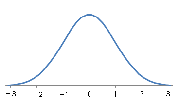
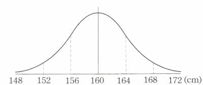
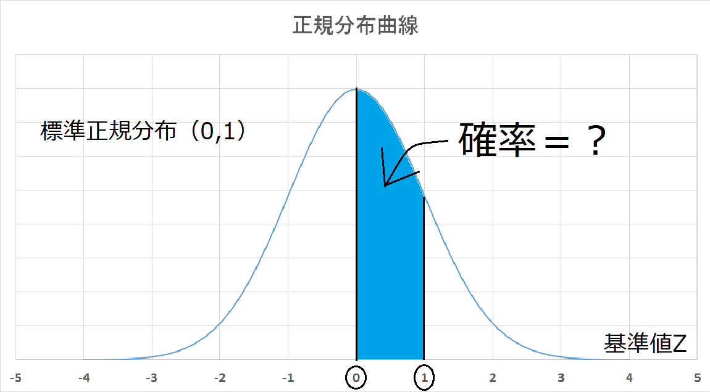
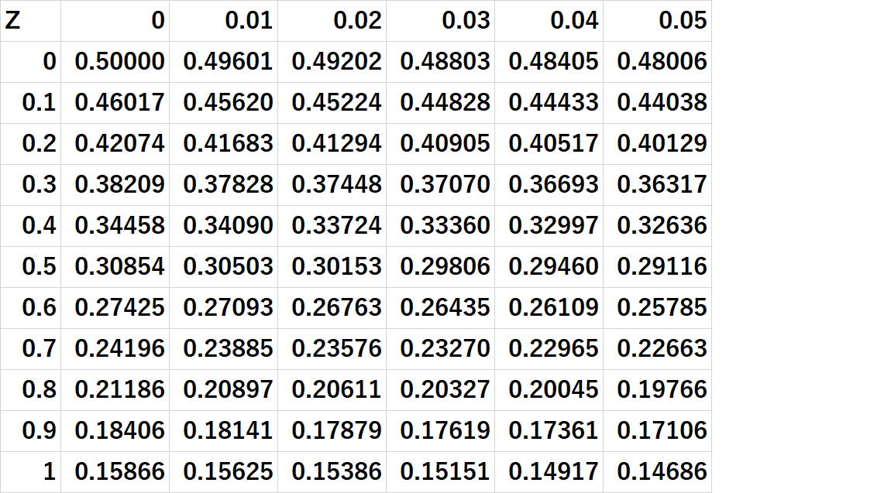

正規分布のグラフ
 上のような2つのグラフのことを正規分布という。確率分布の一種で、平均値を中心として対称で、 つり鐘型をしている。母集団が正規分布をすれば、そこから抽出された無作為標本も正規分布に 似た形をするはずである。これを、データの正規性という。
μ:母平均
σ²:母分散
σ:母標準偏差
このページでは、母平均μ、母分散σ²の正規分布をN(μ,σ²)という記号で表す。
母集団が正規分布に従うことが分かれば、いろいろと便利なことが多い。例えば以下のことがあげられる。
1)正規分布N(μ,σ²)はμとσ²（またはσ）で一意に決定される
2)μは標本平均
3)したがって、正規母集団からの標本の持つ情報は
ⅰ)「平均値±標準偏差の範囲に全体の68.26%が含まれる」
ⅱ)「平均値±標準偏差×2の範囲に全体の95.44%が含まれる」
ⅲ)「平均値±標準偏差×3の範囲に全体の99.74%が含まれる」
下記の標準正規分布の青い部分の確率を求めましょう。※下記の表が必要なら使ってください。
 
上の画像から青い部分からオレンジ部分の確率を引いたら求めたい確率がでてくることがわかると
思います。それでは、1枚目の画像の確率から見てみましょう。
基準値Zが0.00の部分なので、上記の表を見てみます。すると、0.50000だとわかります。では、2枚目
の画像の確率はというと、基準値Zが1.00の部分なので、0.15866だとわかります。この2つの確率
から、求めたい確率は次の式です。
0.50000-0.15866=0.34134
92,987人が受験した第225回（2017年11月実施）TOEIC（990点満点）の成績が、平均577点、標準偏差172.4点であった。
得点が正規分布に近い分布をしていると仮定して、以下の問いに答えよ。
ア）800点以上の受験者は何人くらいいると考えられるか？
イ）上位1000番目以内に入るためには何点以上あればよいか？
n=92987（人）,
ア）
上のことから、800点は次のように表すことができる。
800点→基準値Z800
Z800=
800-
Z800=
800-577
172.4
Z800≒1.29
正規分布N(0,1)の上側確率:Z→αの表を見てみると
α=0.098525
これを、人数に換算した場合
92,987×0.098525=9161.5人より、9162人くらいいると考えられる。
イ）
上位1000番目以内に入るために、まず1000人目の点を求めてみる。
α=
1000
92987
α=0.0107541
α≒0.011
正規分布N(0,1)の上側100αパーセント点Z(α):α→Z(α)の表を見てみると
Z(0.011)=2.29037より
Z(0.011)=
X-
2.29037=
X-577
172.4
X=971.86
971点では1000番目以内に確実に入れていないので、972点以上必要である。